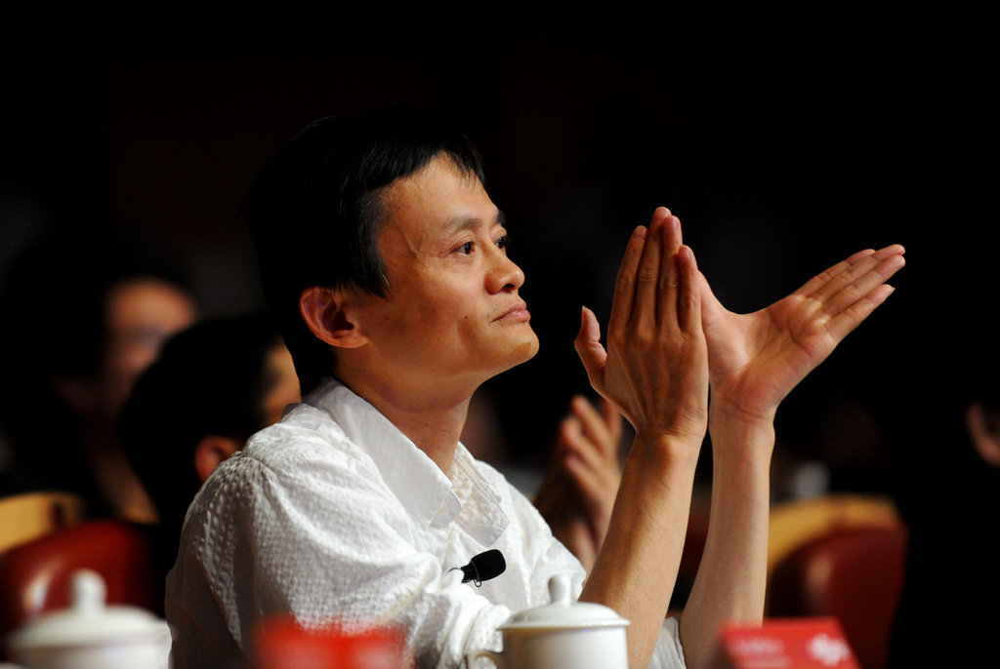

Mr.Jack Ma
The founder of the Alibaba.

The person in the picture is Mr.Jack Ma!
Here is something about Mr.Jack Ma!
- 马云，男，1964年9月10日生于浙江省杭州市，祖籍浙江省嵊州市（原嵊县）谷来镇。
- 阿里巴巴集团主要创始人，现担任阿里巴巴集团董事局主席、日本软银董事、大自然保护协会中国理事会主席兼全球董事会成员、华谊兄弟董事、生命科学突破奖基金会董事。
- 1988年毕业于杭州师范学院外语系，同年担任杭州电子工业学院英文及国际贸易教师。
- 1995年创办中国第一家互联网商业信息发布网站“中国黄页”。
- 1998年出任中国国际电子商务中心国富通信息技术发展有限公司总经理。
- 1999年创办阿里巴巴，并担任阿里集团CEO、董事局主席。
- 2013年5月10日，辞任阿里巴巴集团CEO，继续担任阿里集团董事局主席。
- 2013年6月30日，马云当选全球互联网治理联盟理事会联合主席。
- 2013年10月受邀出任英国首相戴维·卡梅伦的特别经济事务顾问。
- 2016年5月8日，马云任中国企业家俱乐部主席。
- 2016年9月21日，联合国秘书长潘基文亲自签发任命书，宣布马云受邀出任联合国贸易和发展会议青年创业和小企业特别顾问。
如果你想了解更多关于马云的信息，你可以点击这里！更多信息
456
456